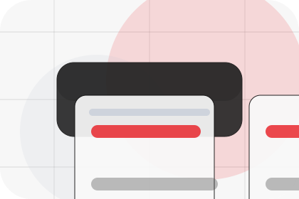
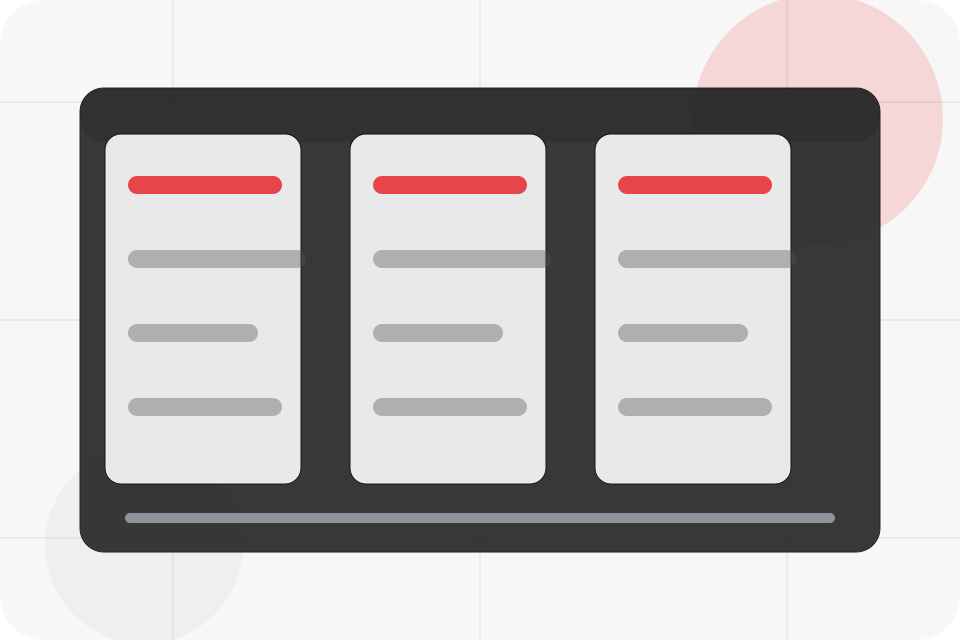
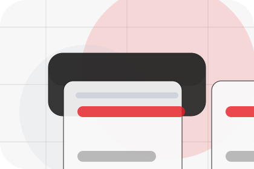
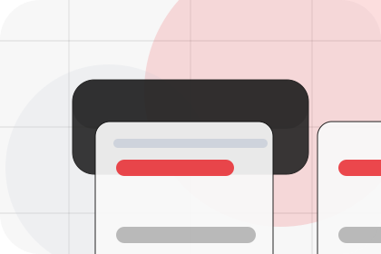
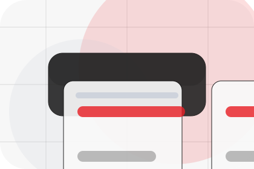
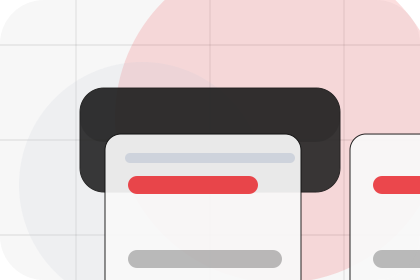
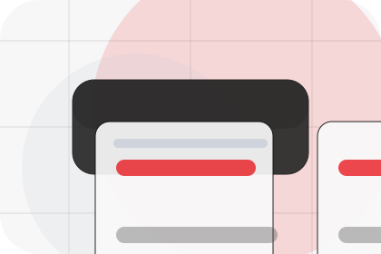
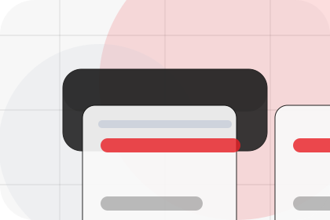
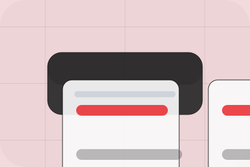

Before
The uncertainty, delay, or missed opportunity visitors bring into bills.
Savings / 01
Savings opens as a clear energy decision hub: what Vault offers, who it helps, why it matters, and which route to take first.
The first screen combines positioning, proof, primary action, and fast internal navigation, so people can act immediately or compare the rest of the savings route with context.
Centered product hero
Select the closest route and Vault keeps the next step, proof, and follow-up expectation aligned with cost reduction and resilience.

Savings / 02
Bills shows what changes after the work: clearer decisions, visible progress, and proof points that connect the offer to real outcomes.
The layout connects before-and-after thinking with measured outcomes, making the result easy to scan without promising what the business cannot guarantee.
Explore Savings
The uncertainty, delay, or missed opportunity visitors bring into bills.

The clearer, safer, or more valuable state Vault is designed to support.

The visible cue that connects bills to a believable decision, not a loose claim.
Savings / 03
Payback shows what changes after the work: clearer decisions, visible progress, and proof points that connect the offer to real outcomes.
The layout connects before-and-after thinking with measured outcomes, making the result easy to scan without promising what the business cannot guarantee.
Explore SavingsThe uncertainty, delay, or missed opportunity visitors bring into payback.
The clearer, safer, or more valuable state Vault is designed to support.
The visible cue that connects payback to a believable decision, not a loose claim.
Savings / 04
Incentives shows what changes after the work: clearer decisions, visible progress, and proof points that connect the offer to real outcomes.
The layout connects before-and-after thinking with measured outcomes, making the result easy to scan without promising what the business cannot guarantee.
Explore SavingsThe uncertainty, delay, or missed opportunity visitors bring into incentives.
The clearer, safer, or more valuable state Vault is designed to support.
The visible cue that connects incentives to a believable decision, not a loose claim.
Savings / 05
Finance shows what changes after the work: clearer decisions, visible progress, and proof points that connect the offer to real outcomes.
The layout connects before-and-after thinking with measured outcomes, making the result easy to scan without promising what the business cannot guarantee.
Explore SavingsVault structures finance around before, after, and a clear next route so visitors can compare the block quickly before they calculate savings.
Calculate SavingsSavings / 06
Value shows what changes after the work: clearer decisions, visible progress, and proof points that connect the offer to real outcomes.
The layout connects before-and-after thinking with measured outcomes, making the result easy to scan without promising what the business cannot guarantee.
Explore Savings

The uncertainty, delay, or missed opportunity visitors bring into value.
Savings / 07
Assumptions shows what changes after the work: clearer decisions, visible progress, and proof points that connect the offer to real outcomes.
The layout connects before-and-after thinking with measured outcomes, making the result easy to scan without promising what the business cannot guarantee.
Explore SavingsThe uncertainty, delay, or missed opportunity visitors bring into assumptions.

The clearer, safer, or more valuable state Vault is designed to support.

The visible cue that connects assumptions to a believable decision, not a loose claim.
Savings / 08
Calculator shows what changes after the work: clearer decisions, visible progress, and proof points that connect the offer to real outcomes.
The layout connects before-and-after thinking with measured outcomes, making the result easy to scan without promising what the business cannot guarantee.
Explore SavingsThe uncertainty, delay, or missed opportunity visitors bring into calculator.
The clearer, safer, or more valuable state Vault is designed to support.
The visible cue that connects calculator to a believable decision, not a loose claim.
Savings / 09
Review shows what changes after the work: clearer decisions, visible progress, and proof points that connect the offer to real outcomes.
The layout connects before-and-after thinking with measured outcomes, making the result easy to scan without promising what the business cannot guarantee.
Explore SavingsThe uncertainty, delay, or missed opportunity visitors bring into review.
The clearer, safer, or more valuable state Vault is designed to support.
The visible cue that connects review to a believable decision, not a loose claim.
Savings / 10
Vault closes the savings route with a clear action, a quick reminder of the value, and a low-friction way to calculate savings.
Visitors who are ready can use the primary action. Visitors who are still comparing can scan the section links, proof, and support routes before they calculate savings.
Calculate SavingsThe final block keeps the choice simple: act now, compare one more proof route, or send enough detail for a focused response.
Calculate Savingscost reduction and resilience
A renewable energy product site with minimalist hero, savings modules, battery/solar cards, and direct calculator. Savings ends with a direct path to calculate savings, plus enough context for visitors who still need to compare.

Calculate SavingsInformation is provided for planning and should be reviewed for the final client, location, and operating rules.